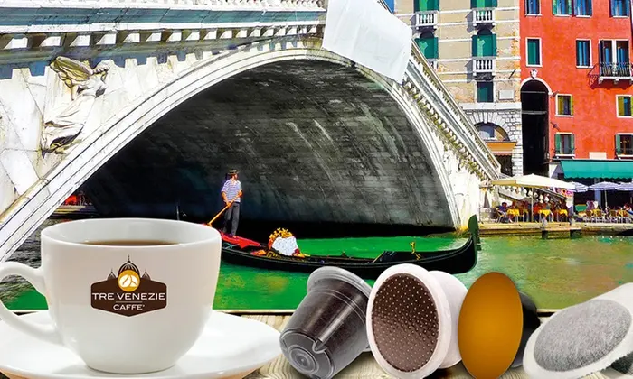
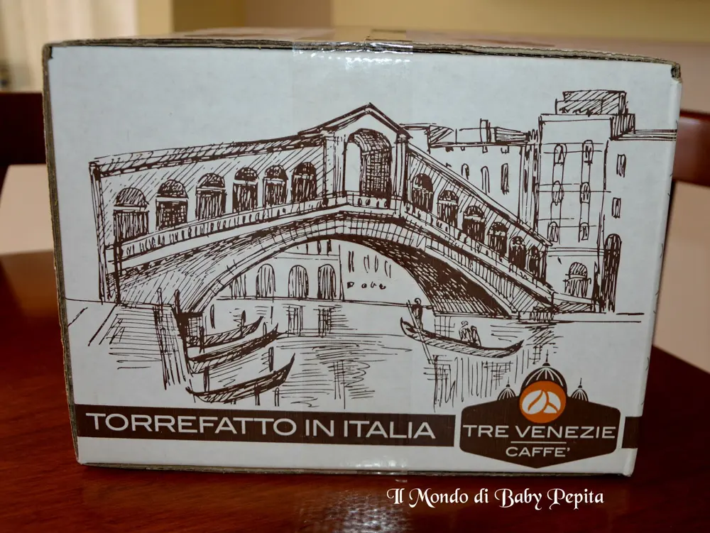
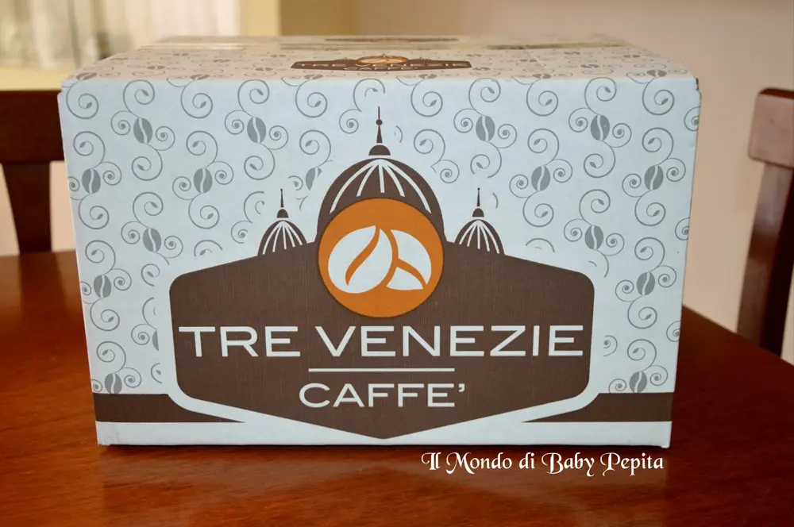
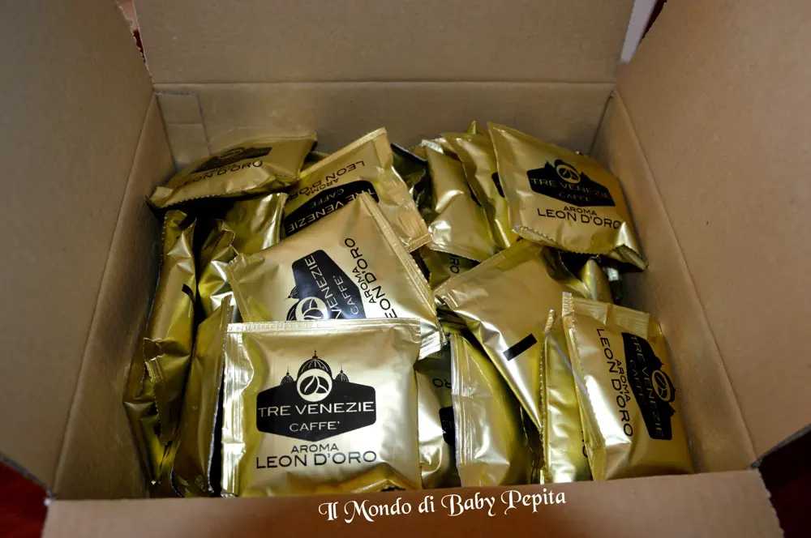
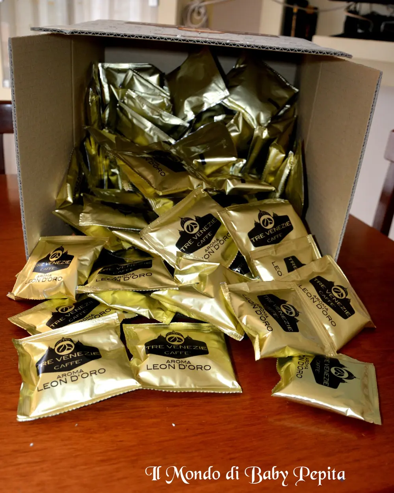
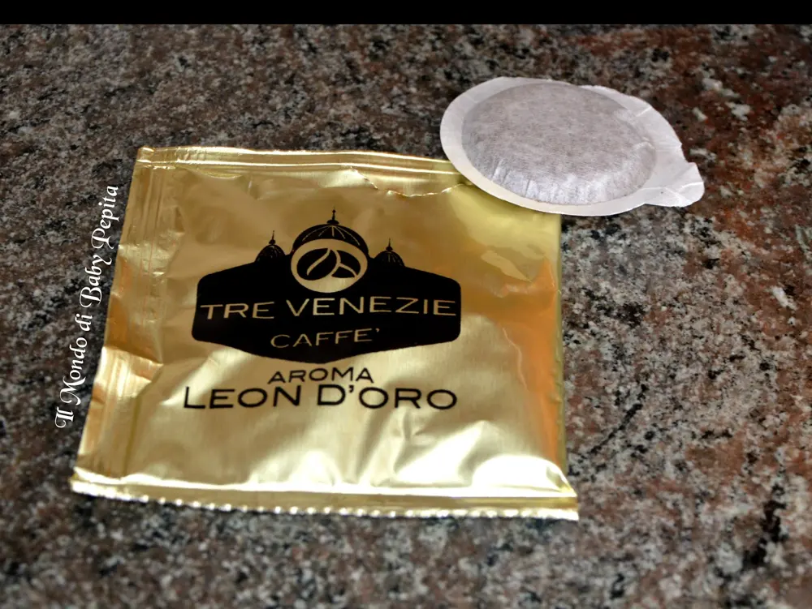
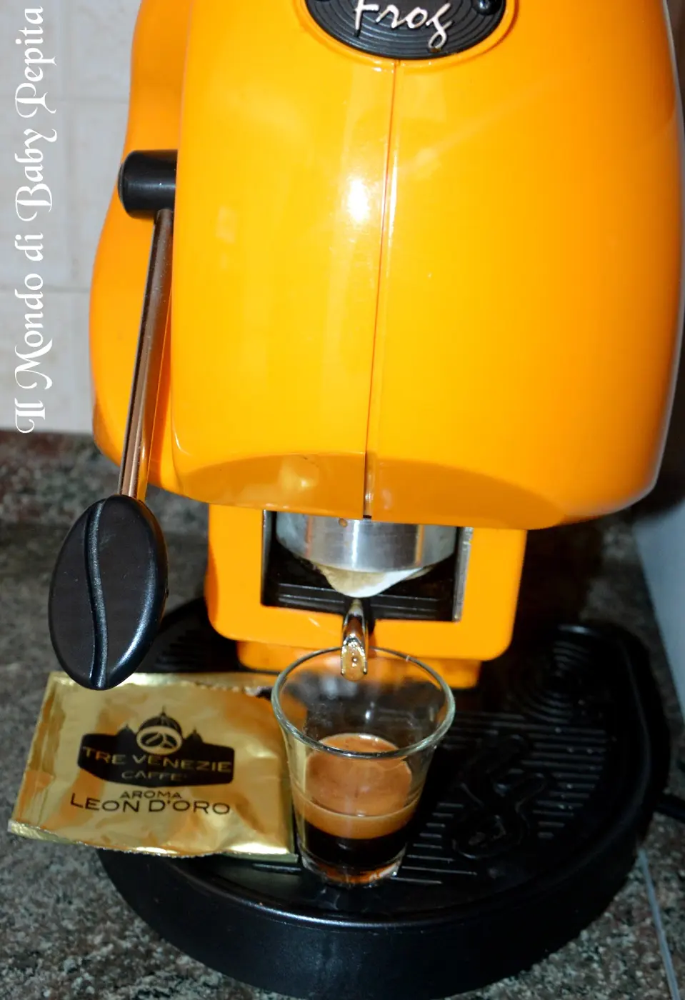
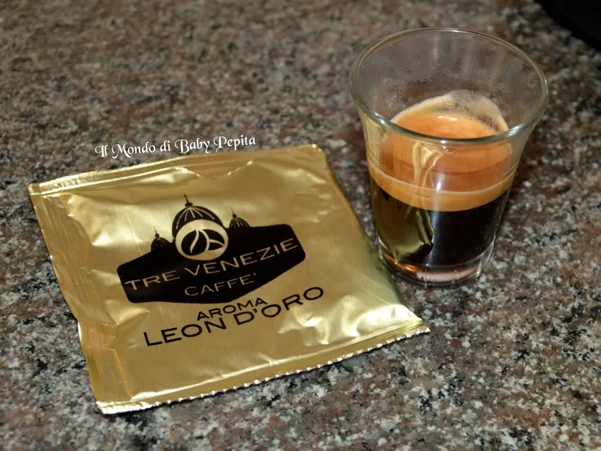

caffè Tre Venezie

"Quando io morirò, tu portami il caffè, e vedrai che io resuscito come Lazzaro".così diceva il grande maestro del teatro Eduardo De Filippo.
E come dargli torto, in Inghilterra sono soliti prendere thè mentre per noi il caffè è un’abitudine, una tradizione.
 Oggi, voglio parlarvi di una delle aziende che ho avuto il piacere di “provare” e gustare. Sto parlando di Caffè Tre Venezie.
Oggi, voglio parlarvi di una delle aziende che ho avuto il piacere di “provare” e gustare. Sto parlando di Caffè Tre Venezie.

 Avendo una macchina del caffè in cialde, compro almeno una volta al mese il caffè, ho avuto così la possibilità di acquistare sul sito http://www.capsule.it/che vende direttamente dal produttore saltando di conseguenza tutti i passaggi del fornitore, negozio fino ad arrivare a noi consumatori. No, noi da questo bel sito comperiamo direttamente dal produttore risparmiando dunque un bel po’.Non sono tantissimi tipi di cialde o capsule, questo è vero, ma tra le varietà che ci mette a disposizione il sito web possiamo trovare tra quelli più consumati e sono di sicuro quelli che hanno i prezzi più competitivi di tutto il web.
Avendo una macchina del caffè in cialde, compro almeno una volta al mese il caffè, ho avuto così la possibilità di acquistare sul sito http://www.capsule.it/che vende direttamente dal produttore saltando di conseguenza tutti i passaggi del fornitore, negozio fino ad arrivare a noi consumatori. No, noi da questo bel sito comperiamo direttamente dal produttore risparmiando dunque un bel po’.Non sono tantissimi tipi di cialde o capsule, questo è vero, ma tra le varietà che ci mette a disposizione il sito web possiamo trovare tra quelli più consumati e sono di sicuro quelli che hanno i prezzi più competitivi di tutto il web.Dispongono di varie offerte che credetemi, sono davvero da prendere in considerazione. Partendo dal presupposto che chi usa regolarmente il caffè in cialde o in capsule conosce i prezzi del mercato ed io mi sono trovata bene a fare acquisti da http://www.capsule.it/.
Parliamo ora del Caffè Tre Venezie.Come nasce questa azienda?
Dicono che Napoli è la città della pizza, della mozzarella ed anche del caffè, ma in realtà ci sbagliamo, la prima città italiana che conobbe l’aroma del caffè fu Venezia, per poi diffondersi in tutta la penisola e diventare un punto di riferimento per trafficanti non solo italiani, ma anche di altri paesi.I veneziani impararono così a gustare l’aroma del caffè prima per la bevanda ma anche per le proprietà curative e digestiva che ne caratterizzava. Ben presto il caffè si diffuse in tutto l’occidente divenendo una bevanda famosa.
L’azienda Tre Venezie, dunque nasce nella seconda metà del 600 insieme al caffè, e da allora ha un personale esperto capace di promuovere la crescita dei volumi di vendita poiché si impegnano a diffondere il marchio Tre Venezie s.r.l. a diversi settori di veding.
Caffè Tre Venezie s.r.l. socio unico, produce anche una linea di prodotti monoporzionato, in varie miscele di caffè tra cui - Lavazza a modo mio
- Lavazza blue
- Nespresso
- Ese
- Lavazza espresso point
- Diametro 32
- Keeuring
- Dolce gusto.
Ci offre inoltre capsule di ultima generazione sul mercato .Ovviamente non esiste solo il caffè come bevanda ed infatti l’azienda Tre Venezie offre anche una vasta gamma di tè, tisane in foglie, caffè aromatizzati. Infine ci segue in fino alla fine nel gustare ogni bevanda fornendo anche dolcificanti, zucchero ecce cc. per soddisfare al massimo tutte le esigenze.Le miscele che ci offre questo marchio pregiato le elenchiamo velocemente qui:
- Aroma Leon D’oro
- Aroma Crema Soave
- Aroma Decaffeinato
- Arabica di San Marco
- Caffè aromatizzati
- Tè e tisane.
Vediamo nel dettaglio quella che in pratica ho acquistato io, ovvero Aroma Leon D’oro.

Confezione da 100 cialde di una miscela corposa e cremosa dal gusto intenso.
Questo caffè è l’accurata selezione dei chicchi delle più pregiate provenienze, scelte apposta per offrire un gusto unico di vero piacere per il palato.
Davvero una pausa piacevole e profumata.

Che dire? Io darei un’occhiata alle offerte per bere un ottimo caffè.http://www.capsule.it/cialde-ese-44